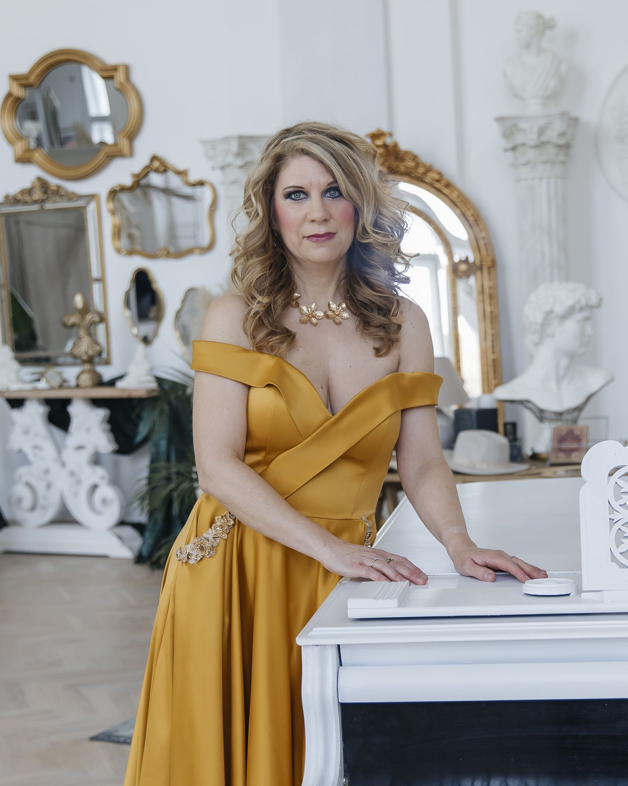

About us

The members of the piano duo Fourhands started working together in the autumn of 2021 while preparing an Advent concert. Their first piece together was a suite from Tchaikovsky’s ballet The Nutcracker, and soon the idea arose to expand the programme with other ballet music so that the concerts under the title “Fairytale Ballets” would form a themed whole. Since then, they have played numerous concerts together and, besides four-hand standards, they enjoy broadening their repertoire with other musical genres.
At present they organise concerts focused mainly on works by leading Czech composers, such as Dvořák’s Slavonic Dances and the complete cycle Má vlast by Bedřich Smetana. They also perform jazz pieces by contemporary Czech composers, arrangements of orchestral and symphonic works and film music. They give educational concerts for schools as well. In addition to four-hand piano music they also include compositions for two pianos. As part of their concerts and projects they cooperate, among others, with the artist agencies Globarts and Fidelio and with the composer Zdeněk Král.
Performances
Upcoming events:
17.1.2026 – Knihovna Velké Popovice – New Year’s Concert, 18:00.
10.2.2026 – Bystřice nad Pernštejnem – Cultural centre, 19:00.
17.2.2026 – Kolín – Municipal Social House, 19:00.
23.4.2026 – Vysočany Town Hall, 19:00.
1.10.2026 – Opava.
10.11.2026 – Emmaus Monastery – Baroque Refectory (in cooperation with agency Fidelio), 18:30.
Past events:
12.11.2025 – Baroque Hall of the Emmaus Monastery – Gala concert, 18:30 (in cooperation with agency Fidelio).
14.9.2025 – Tábor – Oskar Nedbal Theatre – B. Smetana – Má vlast, 19:00.
23.9.2025 – Frenštát pod Radhoštěm – House of Culture, 19:00 (in cooperation with agency GLOBART).
26.7.2025 – Vysoká u Příbramě – Antonín Dvořák Memorial – Programme “Dance in National Colours”.
2.4.2025 – Velké Meziříčí – Jupiter Club, 19:00 (in cooperation with agency Globart).
21.3.2025 – Rájec-Jestřebí – Cultural Centre, 19:00 (in cooperation with agency Globart).
2.3.2025 – Bedřich Smetana Museum, Prague, 18:00.
4.2.2025 – Přerov – Municipal House, 19:00 (in cooperation with agency Globart).
18.1.2025 – Velké Popovice, Library, 18:00.
23.1.2025 – Ostrov, Old Town Hall, 17:00.
3.12.2024 – Advent concert, Libeň Chateau, 19:00.
14.11.2024 – Educational concerts, Library Velké Popovice.
11.10.2024 – Říčany Babice – Concert of film music, 19:00, Cultural House.
8.6.2024 – Liberec – Liebieg Palace, concert of film music on the summer stage, 14:00.
16.5.2024 – Prague, Chodovská tvrz, 19:00.
4.4.2024 – Prague, Primary Art School Jižní Město.
2.3.2024 – Antonín Dvořák Memorial – Má vlast – concert for the 200th anniversary of B. Smetana’s birth.
7.3.2024 – Brno-Bystrc, 19:00 (in cooperation with agency GLOBART).
22.2.2024 – Třebíč, 19:00 (in cooperation with agency GLOBART).
15.2.2024 – Vyškov, 19:00 (in cooperation with agency GLOBART).
20.1.2024 – Library Velké Popovice, 19:00 – New Year’s concert: Famous classical and film melodies.
7.12.2023 – Educational concerts, Library Velké Popovice.
8.11.2023 – Říčany Babice – Cultural House.
1.11.2023 – Church of St. Lawrence under Petřín – B. Smetana “Má vlast”.
28.4.2023 – Chodovská tvrz – “Dances in Transformation”.
27.4.2023 – Library Velké Popovice – Educational concerts “Fairytale Ballets”.
7.1.2023 – “Dances in Music with Projection”, Atrium Žižkov.
12.2022 – Library Velké Popovice.
12.2022 – Educational concerts – P. I. Tchaikovsky – The Nutcracker.
6.2022 – University of Ostrava / Faculty of Fine Arts – Department of Keyboard Instruments – “Dancing Around the World”.
5.2022 – Atrium Žižkov.
3.2022 – Prague, Primary Art School Jižní Město.
Kateřina
Konopová

She studied at the Janáček Conservatoire in Ostrava and graduated from the Institute for Artistic Studies (today Faculty of Arts) of the University of Ostrava under the guidance of professor Marta Toaderová. After that she success fully completed her postgraduante studies at VŠMU (Academy of Performing Arts) in Bratislava, under the guidance of professor Stanislav Zamborský. Here she focused in detail on the work of Bohuslav Martinů.
She has won several awards in international competitions–she was awarded first prize for her solo performance in the Art-duo Competition (2018), second prize again for her solo performance, this time in the International Master Competition in Warsaw (2019) and first prize in Art-duo Competition in Barcelona. As a piano duo with Miroslav Míč, The Grand Prix award from the International Master Competition in Warsaw and first prize in the International Competition in Barcelona, both held in 2019, can be regarded as their biggest joint succes so far.
Besides, in autumn 2019, they gave as a piano duo a series of concerts in Taiwan, where they were invited on the occasion of celebrations relating to the anniversary of the birth of Czechoslovakia, organized by the Ministry of foreign Affairs of the Czech Republic. In 2005, she was presented second prize in The First Henri Selmer Bass Clarinet Competition in Rotterdam for a duo performance along with the bass clarinetist Jiří Porubiak. In addition, she has received free awards in competitions with wind instruments and with the Pražská kantiléna choir for outstanding piano accompaniment.
She has attended several international master piano courses. As an orchestra player, she has been cooperating with the Janáček Philharmonic Ostrava. Several times, she even performed with them as a soloist. She was teaching at the Faculty of Arts of the University of Ostrava and at the Janáček Conservatoire in Ostrava. At present, she is not only a concert soloist, she also dedicates herself to interpretations of chamber music and is a much sought-after accompanist. She enjoys cooperating with the Pražská Kantiléna choir. She has also been cooperating several times as an accompanist in International clarinet xcourses in Ostrava. Apart from all that, she success fully pursues her teaching aktivity at Conservatory Jaroslav Ježek in Prague.
Irena
Andruško

Irena Andruško (born Irina Čerkašina) began studying piano at the age of six in the class of N. Avramenko at the Central Professional Music School in Kharkov. From the beginning, she participated in international competitions, concerts and festivals in Ukraine and abroad, and performed several times with the Kharkov Philharmonic Orchestra.
In 2003, she received the 1st prize in the piano duo competition “A Visit to Ajvazovsky” (Ukraine). A year later she won 1st prize in the International Virtuosi per musica di pianoforte competition in Ústí nad Labem. Also significant for her was the 2nd prize in the J. Poljansky Competition in the chamber ensembles category (Ukraine) in 2006, and the 2nd prize in the International Virtuosi per musica di pianoforte competition in Ústí nad Labem in 2009.
In the years 2012–2017 she was a student at the Prague Conservatory in the class of Milan Langer. In 2016 she won 2nd prize at the International Z. Fibich Competition in Melodrama Interpretation and 2nd prize at the XXXIXth Competition of Conservatories and Music Gymnasiums of the Czech Republic.
She actively participated in piano courses under the guidance of prominent pianists — prof. Bernd Goetzke (Germany), prof. Milan Langer, prof. Michal Rezek, prof. Martin Kasík, Denis Severin (Switzerland — chamber music), prof. Marcin Sieniawski (Germany — chamber music), prof. Viktor Goldberg (Israel), prof. Maria Samson-Primachenko (Russia–France) and others.
Programmes
We offer the following concert programmes:
B. Smetana – Má vlast
Homage to Czech Masters – works by A. Dvořák, B. Smetana, Z. Fibich, K. Slavický, E. Hradecký.
Fairytale Ballets – music from ballets by P. I. Tchaikovsky, M. de Falla, S. Prokofiev, accompanied by projection.
Dance in Transformation – A. Dvořák – Slavonic Dances, J. Turina – Spanish Dances, F. Chopin – Waltzes and Polonaises, E. Hradecký – Jazz dance pieces, etc.
Film music, possibly in combination with the programmes above.
Jazz music, possibly in combination with percussion.
The Sound of the Orchestra in the Piano – arrangements of symphonic and orchestral works (W. A. Mozart – opera overtures, A. Dvořák – New World Symphony, G. Gershwin – Porgy and Bess, Rhapsody in Blue).
“Dance in National Colours” – a themed programme (dances by Dvořák, Grieg, Brahms).
“Stories and Legends in Czech Music” (Dvořák – Legends, Suk – Radúz and Mahulena, Smetana – selections from Má vlast).
PHOTO GALLERY


VIDEO GALLERY
P. I. Tchaikovsky – The Nutcracker (Dance of the Sugar Plum Fairy)
Faculty of Arts, University of Ostrava, 2. 6. 2022
Video
Slavonic Dance No. 1 in C major, Presto (Furiant), 1st series (op. 46)
Four-hand arrangement for piano
Video
Slavonic Dance No. 2 in E minor, Allegretto scherzando (Dumka), 1st series (op. 46)
Four-hand arrangement for piano
Video
Slavonic Dance No. 5 in A major, Allegro vivace (Skočná), 1st series (op. 46)
Four-hand arrangement for piano
Video
Slavonic Dance No. 7 in C minor, Allegro assai (Skočná), 1st series (op. 46)
Four-hand arrangement for piano
Video
Slavonic Dance No. 8 in G minor, Presto (Furiant), 1st series (op. 46)
Four-hand arrangement for piano
Video
Contacts
Address
Central Bohemian Region, Praha-Újezd, 149 00
Manager
Šárka Belovická: fourhandsmanager@seznam.cz
E-mails
Irina:
cherkashynairina@gmail.com
Kateřina:
konopova.ka@seznam.cz